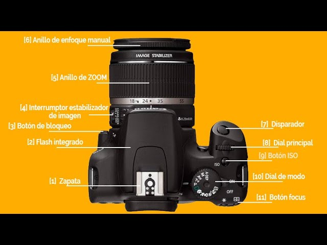

No bien publicamos el primer artículo de nuestro blog sobre fotografía, nos enteramos de
una noticia que nos emocionó mucho: ¡habrá una feria de fotografía en diciembre! Una oportunidad
única para los amantes de este maravilloso arte.
La feria reunirá a fotógrafos, entusiastas y profesionales del sector, ofreciendo una
plataforma para compartir conocimientos, exhibir obras y descubrir las últimas tendencias
Contará con la presencia de destacados fotógrafos, talleres, exposiciones y stands de
equipos fotográficos. Será una ocasión perfecta para aprender, compartir experiencias y
descubrir nuevas tendencias en el mundo de la fotografía.
En este artículo, te contaremos todo lo que necesitas saber sobre esta feria de fotografía,
desde las fechas y ubicación hasta las actividades y eventos que se llevarán a cabo.
Comencemos con un poco de hype: Aquí va un video de la primera edición de la feria, llevada
a cabo en el 2023, para ir empapándote un poco del ambiente y la energía que se vive en este tipo
de eventos.
Actividades
Durante la feria, se llevarán a cabo diversas actividades que prometen ser emocionantes e inspiradoras para todos
los asistentes.
Algunas de las actividades destacadas incluyen:
Feria de artistas, editores y emprendedores con más de 130 proyectos.
Workshop "Portfolio Activo": actividad arancelada con inscripción previa.
Workshop "Quimigramas": creación de imágenes experimentales sin cámara, gratuito y sin inscripción.
Cuarto Oscuro Portátil: impresión analógica en vivo (solo domingo, con inscripción).
Enmarcado en vivo y kiosko de impresión fine art.
Exposiciones: "Cooking Potato Stories", "Chaco Forever" y "Manifiesto de un cuerpo errante".
¿No tienes tiempo para asistir a todas las actividades? No te preocupes, aquí te presentamos
un Calendario de Google que elaboramos nosotros mismos con las fechas y horarios de cada una
de las actividades destacadas de la feria. Así podrás planificar tu visita y no perderte nada.
Si aún es noviembre, haz click en la flecha hacia la derecha para ver las actividades de diciembre.
Puedes agregar el calendario a tu propia cuenta de Google Calendar para recibir recordatorios,
cliqueando "Agregar Calendario de Google" en la parte inferior izquierda o puedes tocar los
eventos que te interesan y luego "+ Copiar a mi calendario" para agregarlos individualmente.
NOTA: Recuerda que algunos talleres requieren inscripción previa y pueden tener un costo
asociado. Asegúrate de revisar los detalles en el calendario y registrarte con anticipación si
es necesario.
Evento PORTFOLIO ACTIVO
Uno de los eventos más destacados de la feria es el PORTFOLIO ACTIVO, un espacio destinado a
reactivar la creatividad fotográfica, explorar nuevas ideas, ampliar tu portfolio y conectarte
con otros fotógrafos en dos escenarios especialmente curados, combinando práctica guiada,
dirección de modelos y una experiencia completa dentro del universo de la feria.
Te invitamos a participar en este evento único, completando el formulario aquí debajo:
Ubicación y fecha
La feria se llevará a cabo los días 6 y 7 de 15 a 21 hs, en Fraga 648, CABA.
Toca el botón para ampliar el mapa o "Cómo llegar" para obtener indicaciones desde tu ubicación,
utilizando Google Maps. La app de Google te dirá el mejor camino en auto, transporte público o
caminando.
También puedes hacer zoom y desplazarte por el mapa para explorar los alrededores de la feria.
¡Nos encontramos allí para seguir aprendiendo y disfrutando de este maravilloso mundo!
Extra
Como yapa de la cuestión, te dejamos una playlist de Spotify que utilizamos
frecuentemente mientras editamos nuestras fotografías. ¡Esperamos que la disfrutes tanto
como nosotros!
Te esperamos en la feria para seguir compartiendo nuestra pasión por la fotografía y que nos cuentes qué
música sueles escuchar mientras editas tus fotos.
Artículo 1: Iniciando en la fotografía
¿Qué es la fotografía?
La fotografía es el arte y la técnica de capturar imágenes mediante la acción de la luz sobre una superficie sensible,
como una película fotográfica o un sensor digital. A lo largo de la historia, la fotografía ha evolucionado desde sus
inicios en el siglo XIX hasta convertirse en una forma de expresión artística y documental ampliamente utilizada en todo
el mundo.
En este sitio web, exploraremos diversos aspectos de la fotografía, incluyendo técnicas, estilos, equipos y consejos
para mejorar tus habilidades fotográficas. Ya seas un aficionado o un profesional, aquí encontrarás recursos útiles
para inspirarte y aprender más sobre este fascinante arte.
¿Qué necesito para comenzar?
Para comenzar en el mundo de la fotografía, necesitarás algunos elementos básicos:
Una cámara fotográfica: Puede ser una cámara digital, una cámara réflex o incluso un teléfono inteligente con una buena cámara.
Conocimiento básico de los conceptos fotográficos: Aprende sobre la exposición, el enfoque, la composición y otros aspectos fundamentales de la fotografía.
Práctica constante: La fotografía es una habilidad que mejora con la práctica. Sal a tomar fotos regularmente para perfeccionar tus habilidades.
Software de edición: Considera utilizar programas de edición de fotos para mejorar y retocar tus imágenes.
A lo largo de este sitio, te proporcionaremos guías y recursos para ayudarte a comenzar tu viaje en la
fotografía.
Partes de una cámara fotográfica
A continuación, se muestra una imagen interactiva de las partes principales de una cámara fotográfica. Haga clic
en las diferentes áreas para obtener más información sobre cada componente.
En próximas actualizaciones, iremos viendo más sobre cada sección de una cámara fotográfica, así como sus
diferentes funcionalidades.

La imagen es a modo ilustrativo. No todas tienen las mismas partes ni en la misma ubicación, ya que depende del
modelo y marca de la cámara fotográfica. En la próxima sección se presenta una tabla con distintos modelos de
cámaras.
Tipos de cámaras fotográficas
Existen varios tipos de cámaras fotográficas, cada una con sus propias características y usos. A continuación, se presenta
una tabla con algunos de los tipos más comunes:
Tipo de cámara
Descripción
Ejemplos de uso
Cámara réflex (DSLR)
Utiliza un espejo para reflejar la luz hacia el visor óptico. Ofrece alta calidad de imagen y control manual.
Fotografía profesional, paisajes, retratos.
Cámara sin espejo (Mirrorless)
No tiene espejo, lo que permite un diseño más compacto. Ofrece calidad similar a las DSLR.
Fotografía de viaje, eventos, vlogging.
Cámara compacta
Pequeña y fácil de usar. Ideal para principiantes y fotografía casual.
Fotografía diaria, vacaciones.
Cámara de medio formato
Utiliza un sensor más grande que las DSLR y mirrorless, ofreciendo una calidad de imagen superior.
Fotografía comercial, moda, paisajes de alta resolución.
Cámara instantánea
Imprime fotos al instante después de tomarlas. Popular por su estilo retro.
Eventos sociales, fotografía divertida.
Fuente: Elaboración propia basada en conocimientos generales sobre fotografía.
La exposición
Como dijimos al principio, la fotografía consiste en capturar imágenes mediante la acción de la luz sobre una
superficie sensible. Por lo tanto, la exposición es un concepto fundamental en la fotografía que se refiere a la
cantidad de luz que llega al sensor o película fotográfica al tomar una fotografía. La exposición afecta directamente
la apariencia de la imagen final, incluyendo su brillo, contraste y detalles en las sombras y luces.
Para lograr una exposición adecuada, los fotógrafos deben controlar tres elementos clave, conocidos como el "triángulo
de exposición": la apertura del diafragma, la velocidad de obturación y la sensibilidad ISO. En términos simples, estos
tres elementos trabajan juntos para determinar cuánta luz llega al sensor y cómo se captura la imagen. Por esta razón,
es importante entender cómo funcionan y cómo ajustarlos para lograr la exposición deseada en diferentes condiciones de
iluminación, alcanzando un equilibrio entre ellos.
Veamos de forma gráfica cómo interactúan estos tres elementos del triángulo de exposición:
Apertura del diafragma:
Apertura del diafragma
Velocidad de obturación:
Velocidad de obturación
Sensibilidad ISO:
Sensibilidad ISO
Como puede apreciarse, la apertura del diafragma y la velocidad de obturación tienen valores más bajos, mientras que
la sensibilidad ISO tiene un valor más alto. Esto se debe a que, en condiciones de iluminación adecuadas, es preferible utilizar
aperturas más pequeñas y velocidades de obturación más rápidas para evitar la sobreexposición y el desenfoque de movimiento.
Sin embargo, en situaciones de poca luz, puede ser necesario aumentar la sensibilidad ISO para compensar la falta de luz, lo que
puede resultar en un mayor ruido en la imagen. Por lo tanto, es importante encontrar un equilibrio entre estos tres elementos
para lograr la exposición deseada.
Continuaremos explorando cada uno de estos elementos en detalle en futuros artículos del sitio web.
Próximamente...
En futuras actualizaciones de este sitio web, exploraremos temas más avanzados de fotografía, incluyendo técnicas de composición,
edición de imágenes, tipos de fotografía (como retrato, paisaje, macro, etc.) y consejos para fotógrafos de todos los niveles.
¡Mantente atento para más contenido emocionante!